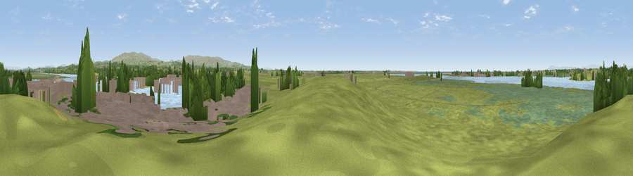

Viewpoint near Glasson Dock
#20000 in England · top 66% of its area beats it · near Glasson DockWhere it is
The exact computed spot (SD 44238 55944). Click the marker for map links.
The view, rendered

A 360° render of this exact spot computed from the terrain model, tree cover and land cover — summer colours, afternoon light, calibrated against photographs of famous viewpoints. Real trees, hedges and buildings will differ in detail.
The panorama
Grey silhouette: terrain skyline in each direction (720 bearings, Earth curvature and refraction included). Dashed green: skyline with trees (+15 m) and buildings (+8 m) as obstacles. Blue strip: how far the ground is visible on each bearing.
Where the view opens
Wedge length = distance to the farthest visible ground on that bearing (vegetation-aware). Rings at 10, 25 and 50 km.
What fills the view
51% grassland · 20% water · 15% wetland · 7% built-up · 6% woodland · 1% cropland
Angular shares of the visible panorama (visual magnitude), not map area. Landscape diversity 0.59 (0–1 Shannon).
Key numbers
More beautiful places nearby
The staircase of upgrades: each row has a higher view potential than everything closer. Driving times are estimates from straight-line distance, calibrated against real road routing — check an actual route before setting out.
| Place | Direction | Drive | Score |
|---|---|---|---|
| Viewpoint near Overton | NNW · 2 km | ~5 min | 62.4 |
| Higher Heysham | NNW · 6 km | ~13 min | 64.3 |
| Viewpoint near Bailrigg | ENE · 6 km | ~13 min | 74.4 |
| Viewpoint near Scorton | SE · 10 km | ~20 min | 76.6 |
| Viewpoint near Quernmore | ENE · 11 km | ~20 min | 77.7 |
| Viewpoint near Scorton | SE · 11 km | ~20 min | 79.9 |
| Warton Crag | NNE · 18 km | ~30 min | 83.2 |
| Viewpoint near Grange-over-Sands | NNW · 23 km | ~38 min | 83.4 |
53.99650, -2.85209 · source: osm viewpoint · position refined by local search. Computed location — check access rights before visiting.